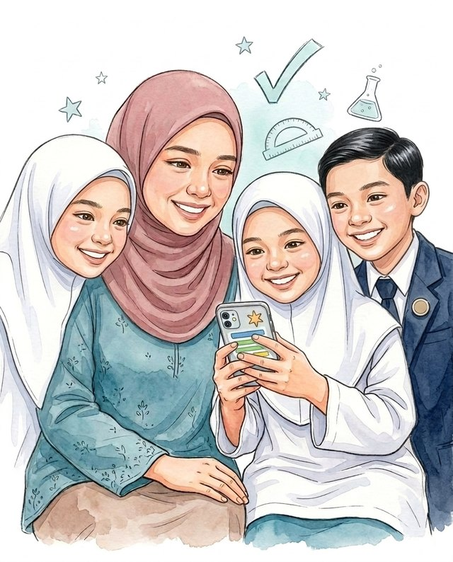

Aplikasi NaikGred memaparkan bab yang sudah dikuasai anak dan bab yang masih lemah secara terus melalui telefon anda. Khusus untuk murid Tingkatan 1 hingga 5.
RM32 setahun untuk seluruh keluarga. Cuba percuma untuk seorang anak (Bab 1). Bayaran balik penuh dalam 7 hari.
Anak menjawab soalan di telefon. Anda melihat markah setiap bab dan bab yang masih lemah.
Rakaman paparan ibu bapa dalam aplikasi sebenar. Nama dan data anak ialah contoh rekaan.
Murid DLP belajar Sains dalam Bahasa Inggeris di sekolah. Sains Tingkatan 1, 2 dan 3 (32 bab) kini boleh dimainkan dalam Bahasa Inggeris, dengan soalan, rajah dan Standard Prestasi mengikut DSKP Science versi Bahasa Inggeris.
The basic unit that makes up all living things is the:
Anda nampak bab yang sudah 80% dan bab yang baru 30%, beserta langkah seterusnya.
Aplikasi mencadangkan bab yang patut diulang. Lima belas minit sehari sudah memadai.
Kurang daripada RM3 sebulan, tanpa yuran bulanan.
Anda tidak perlu meneka lagi. Lihat sendiri kemajuan anak dan ketahui bab yang memerlukan bantuan.
Lihat bilangan bab yang sudah dicuba, purata markah dan sama ada anak bermain dalam masa 24 jam lepas.
Setiap bab dipaparkan dalam peratus, bersama label Cemerlang, Baik, Sederhana atau Perlu bantuan.
Aplikasi menyebut bab yang patut diulang anak, jadi anda tidak perlu menyusun jadual sendiri.
Anda tidak perlu mengajar. Cukup memberi dorongan kepada anak.
Setiap anak mempunyai kad kemajuan dan PIN sendiri.
RM32 setahun bersamaan kurang daripada RM3 sebulan untuk seluruh keluarga.
Anak belajar sambil bermain, dan setiap soalan mengikut DSKP KSSM.
Peta, hentian dan bintang menggalakkan anak mencuba hentian seterusnya.
Sains 51 bab, Matematik 53 bab dan Sejarah 49 bab, Tingkatan 1 hingga 5. Sains Tingkatan 1 hingga 3 turut tersedia dalam Bahasa Inggeris untuk murid DLP.
Anak tahu bab yang perlu diberi tumpuan, tanpa mengulang semua bab.
Setiap bab ada 5 hentian, daripada mudah hingga mencabar. Anak nampak dirinya maju hentian demi hentian.
Dibuka terus dalam pelayar. Tidak perlu memuat turun apa-apa.
Rajah Matematik boleh digerakkan. Soalan Sejarah menggunakan garis masa dan petikan sumber.
Satu langganan keluarga membuka Sains, Matematik dan Sejarah. Gunakan e-mel yang sama di setiap subjek.
Daftar percuma dan tambah seorang anak (langgan untuk sehingga 5 anak). Setiap anak mendapat kod kelas dan PIN sendiri. Anak perlu ditambah di setiap subjek.
Anak membuka pautan di telefon, memilih namanya dan bermain bab demi bab.
Setiap kad anak menunjukkan status bermain, markah setiap bab dan satu cadangan untuk minggu ini.
Akaun percuma: seorang anak, Bab 1 setiap subjek. Harga Early Bird RM32 setahun sehingga 31 Disember 2026. Mulai 1 Januari 2027, harga biasa ialah RM59 setahun. Bayaran balik penuh dalam 7 hari, tanpa sebab.
Akaun percuma untuk seorang anak, Bab 1 setiap subjek. Langganan keluarga RM32 setahun, untuk sehingga 5 anak dan ketiga-tiga subjek. Ini harga Early Bird sehingga 31 Disember 2026. Keluarga yang melanggan sebelum 31 Disember 2026 kekal membayar RM32 setiap tahun, selagi langganan disambung dalam masa 30 hari selepas tamat. Mulai 1 Januari 2027, harga biasa ialah RM59 setahun.
Tiada had. Anak masuk dengan kod dan PIN di mana-mana telefon, tablet atau komputer, dan kemajuannya tetap disimpan pada nama yang sama. Ibu dan bapa boleh log masuk dengan e-mel yang sama untuk melihat kemajuan anak.
Ya, bagi Sains Tingkatan 1 hingga 3 (32 bab). Anak menekan butang EN di bahagian atas skrin, atau anda menyalin pautan versi English (DLP) daripada kad anak dalam paparan ibu bapa. Rekod markah kekal sama dalam kedua-dua bahasa, dan tiada bayaran tambahan. Matematik, Sejarah dan Sains Tingkatan 4 dan 5 masih dalam Bahasa Melayu.
Bayar sekali di Anak NaikGred Sains. Kemudian log masuk dengan e-mel yang sama di Matematik dan Sejarah, dan langganan keluarga terbuka di sana secara automatik. Anak perlu ditambah di setiap subjek kerana setiap subjek menyimpan datanya secara berasingan.
Jejak TP ialah versi untuk guru di sekolah. Anak NaikGred menggunakan soalan yang sama, tetapi paparannya direka untuk ibu bapa, dengan markah setiap bab.
Boleh. Bayaran balik penuh dalam masa 7 hari selepas membayar, tanpa perlu memberikan sebab. Hubungi kami melalui WhatsApp atau e-mel. Butiran lanjut ada dalam terma dan bayaran balik.
Tidak. Tiada pembaharuan automatik. Anda hanya dicaj apabila anda sendiri membuat bayaran baharu.
Kami tidak menyimpan gambar anak, tidak meminta e-mel atau nombor telefon anak, dan tidak menjual data kepada sesiapa. Data anak hanya dipaparkan dalam akaun anda. Baca dasar privasi yang penuh.